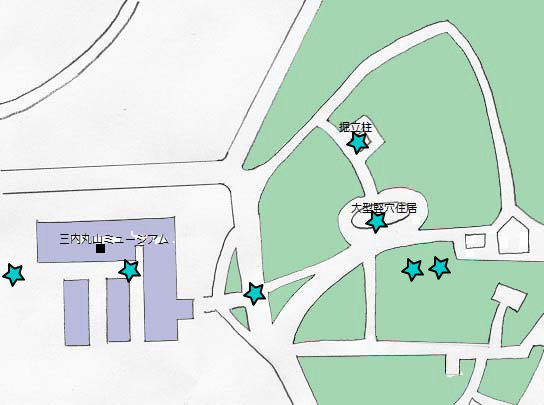
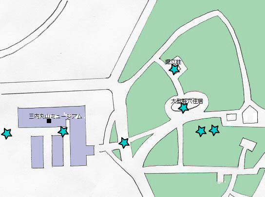

三内丸山遺跡
青森県青森市にある日本でも最大級の縄文集落跡で、今から約5500年前～4000年前に長期間の定住生活が営まれていました。
平成12年11月に国特別史跡に指定されました。
さんまるミュージアム
三内丸山遺跡から出土した重要文化財など1500個以上のの遺物が展示されています。
お昼に2回行っている展示室ガイドを利用すると遺物に関する詳しい話を聞くことができます。



青森県青森市にある日本でも最大級の縄文集落跡で、今から約5500年前～4000年前に長期間の定住生活が営まれていました。
平成12年11月に国特別史跡に指定されました。
三内丸山遺跡から出土した重要文化財など1500個以上のの遺物が展示されています。
お昼に2回行っている展示室ガイドを利用すると遺物に関する詳しい話を聞くことができます。